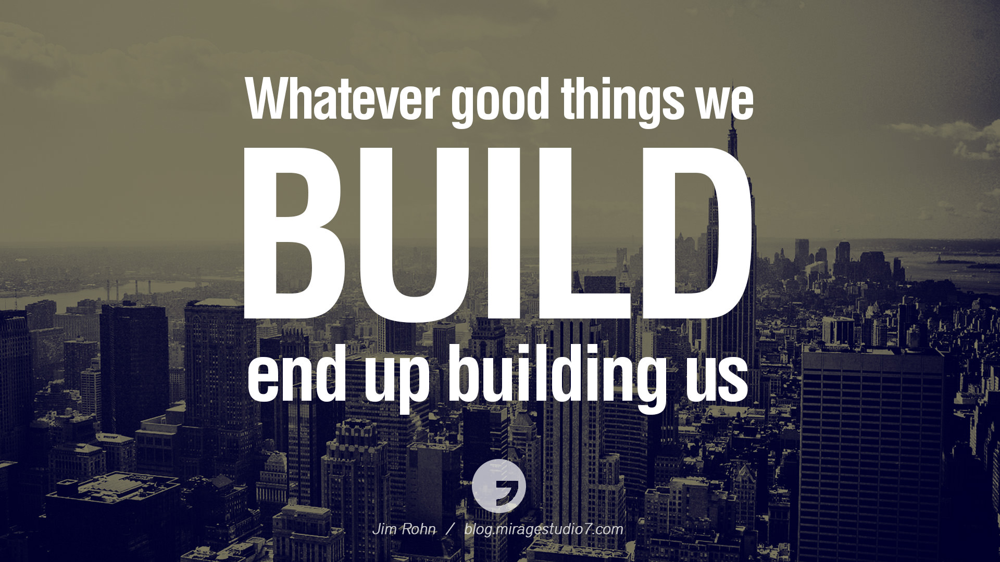
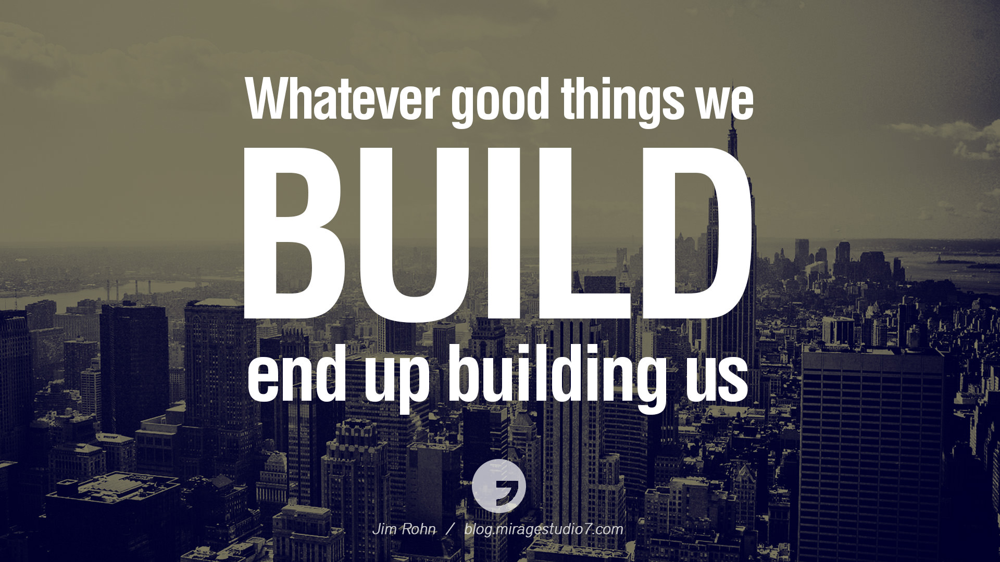

My first goal in life is to travel. I always wanted to travel and go on family vacations, but since I come from a poor family, I never had that. I want to explore the world and visit new sites and atmospheres. I want to be a traveling architect because I want my works to be inspired from all regions of the world, not just the known/famous parts. Being a traveling architect would give me the advantage of exploring various horizons for ideas on designs and also enjoying the sceneries.
Second goal is to buy a field of land and build my desire dream home on it. I was in the Big Brothers Big Sisters program, and my big sister was an architect. When she took me to her home and showed me around, she finally told me that she designed her own home. It was beautiful and inspired me to want to build my dream home some day. Once I get enough money and further my career, I will eventually find a nice quiet place with a great view and design and build my home.
From designing my dream home in elementary, seeing my big sister's home, and looking around at beautiful landscaped and buildings is what made me want to persue my goal as being an architect. Another goal of mine in life is to leave a legacy with everyone knowing my designs. I want to travel and build my desired dream home with my loving family around. I want to be able to leave this earth knowing I lived the life I wanted to succeed. I want others to cherish and admire my works. So, lookout world, here comes a future women architect!


 
